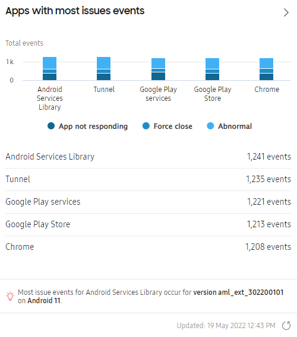
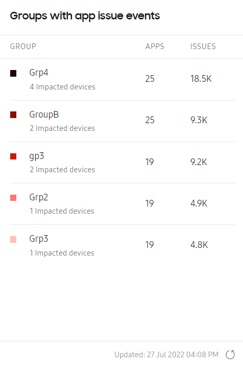
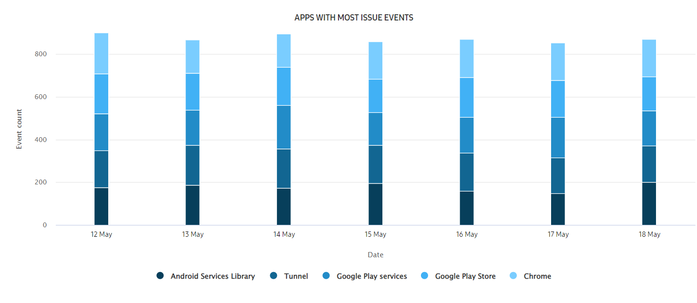
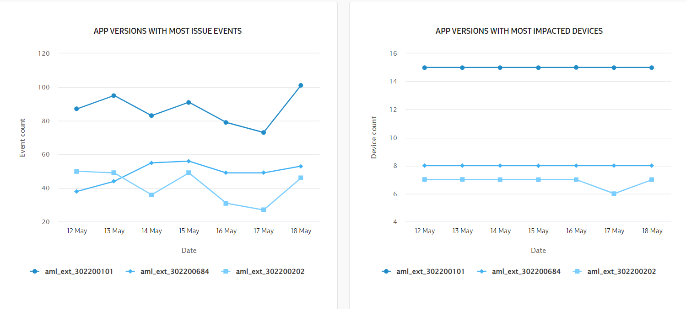
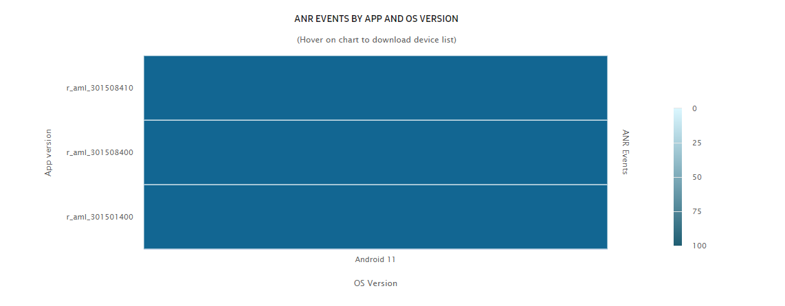
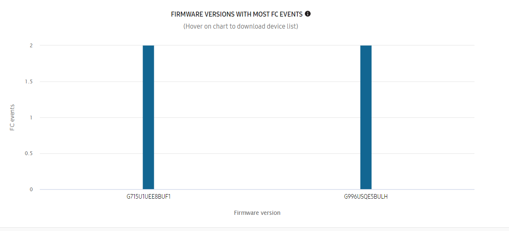

App issues
Last updated November 28th, 2024
How it works
App no response and force close events
On Samsung devices, a hardware quality manager service runs at the system level. This service captures any fatal errors on running apps in real time, which are retrieved periodically by the Knox Asset Intelligence agent. These error events are reported as app no response (ANR) and force close (FC) data.
Use ANR and FC data to identify whether app events are isolated incidents, or if there’s an overall stability issue with a business app. You can also use the cascading reports to quickly pinpoint the root cause of an error and resolve it.
Captured error data includes:
- App information — The app package name and version.
- Timestamp — The time the error occurred in the device’s time zone.
- Class name — The Android system-defined reason for the error.
To address user privacy concerns on personally-owned devices, Knox Asset Intelligence only monitors apps installed in the work profile. If an app is installed in both the work and personal profiles, then data from both profiles is reported.
Any recorded ANR and FC events are uploaded to the Knox Asset Intelligence server at a time interval you can configure in the Dashboard settings. By default, this interval is once per hour.
ANR and FC data is updated on your dashboard hourly unless you extend the time interval.
Abnormal app events
Samsung devices can automatically detect and log a set of pre-defined abnormal app event types caused by native and third-party apps that cause excessive battery drain. The Knox Asset Intelligence agent reports these events to the server in real-time, allowing you to quickly identify and troubleshoot problematic apps. Only apps installed in the work profile are monitored for these events.
The pre-defined abnormal app events on Samsung devices are:
- Frequent wakelock when screen is off
- Frequently wakes up in background
- Excessive background syncing
- Frequent location checks in background
- Frequent job scheduling
- Frequent mobile traffic in background
- Excessive CPU usage in background
- Excessive camera usage in background
- Frequent crashes
- Excessive system resource usage
- Excessive binder calls
- Excessive system resource usage
- Excessive memory usage
Abnormal app events are updated on your dashboard hourly unless you extend the time interval. For more information, refer to Data refresh cycles.
Dashboard tile views
For a description of the dashboard tiles, refer to Dashboard tiles explained.
Main tile view

The Apps with most issues events chart helps you identify and visualize which apps are at the highest risk of disrupting business operations.
This chart shows the top 5 apps on your devices that triggered the app not responding, force close, or abnormal events. The information at the bottom of the chart identifies the top app and determines which app version and OS version are associated with the highest number of issue events.
If your devices are associated with groups, a Groups with app issue events chart lists the five groups with the highest number of reported app issues, the number of impacted apps associated with those issues, and the number of unique impacted devices.

If you’re globally filtering the Knox Asset Intelligence console by a certain group, that group is shown in the chart even if it isn’t one of the five groups with the highest number of reported app issues.
In either chart, click an app name, a group name, or the Expand icon to go to the corresponding expanded view. If you select a group name, the expanded view is filtered by events belonging to only that group.
Expanded view

In the chart, the event types are further broken down by time period. By default, each bar in the chart represents the total event occurrences in one day. Hover over a bar segment to see how many times a type of event happened that day.
Below the chart, the detailed list separates the data by the following categories:
- APP — The name of the app. Click the name to go to a drill-down view of events associated with the app.
- PACKAGE NAME — The package name of the app. For longer package names, hover over it to see the full name.
- DEVICE COUNT — The number of devices that reported issue events.
- TOTAL ISSUE EVENTS — The total number of app not responding, force close, and abnormal events.
- ANR EVENTS — The number of app not responding events that occurred. See App no response and force close events for more details.
- FORCE CLOSE EVENTS — The number of force close events that occurred. See App no response and force close events for more details.
- ABNORMAL EVENTS — The number of abnormal app events that occurred. See Abnormal app events for more details.
For ANR EVENTS, FORCE CLOSE EVENTS, and ABNORMAL EVENTS, click the number of events to move to a drill-down view containing a further breakdown of the events by app and OS versions.
Drill down view
Depending on whether you select the app name or an event count on the expanded view page, three types of drill-down views are available.
By app versions

If you want to identify which versions of a specific app had the highest number of associated issue events or impacted devices, click the app name in the expanded view to go to a page with charts and a list that provide a visualization of the most problematic app versions.
Hover over a chart point in a visualization to see details about that app version, the total number of events recorded for that time period, as well as a breakdown of the events by issue type. You can also download a CSV file for that specific app version that includes the details in the list.
By app and OS versions
Select an event type on either the expanded view page or a single app page to see all the occurrences of that event in the drill-down view, separated by app and OS version.
The top ribbon shows the total number of events, impacted devices, and impacted groups. Under either the number of impacted devices or impacted groups, click View all to go to a list of devices or groups that reported an event of that type, respectively.
After you select an event type from the expanded view. the main chart on the page shows a breakdown of the events by app and OS version. Hover over a section of the chart to view the version and impacted device details. A download link is also available, through which you can download a CSV file for that specific app and OS version with further event details, including call stack information.

In the event log list, information about the device ID, device group, app versions, and OS versions are available. For troubleshooting purposes, the package class, call stack information, and event time are also included. You can use these details to help identify the cause of the event.
- For the ANR (App Not Responding) events, you can download the full call stack as TXT file from the console by clicking the Download link in the CALL STACK column.
- For the FC (Force close) events, you can click VIEW in the CALL STACK column to get extended call stack data in a popup on the console.
By firmware version
If you select an event type under APP VERSIONS FOR [APP NAME] when viewing events by app versions, the total number of events of that type for the app version you selected are displayed in the top ribbon, along with the total number of impacted devices and groups. Click View all under the device or group number to see all events filtered by the respective category.
To see a visualization of which firmware versions reported the highest number of that event type, click the Filter icon, then select one or more options under OS version and Model. After you click APPLY, the chart on the page shows an event breakdown for the options you selected. Hover over a section of the chart to view details about the impacted devices, including an option to download the device list and associated information for that firmware version.

On this page
Is this page helpful?